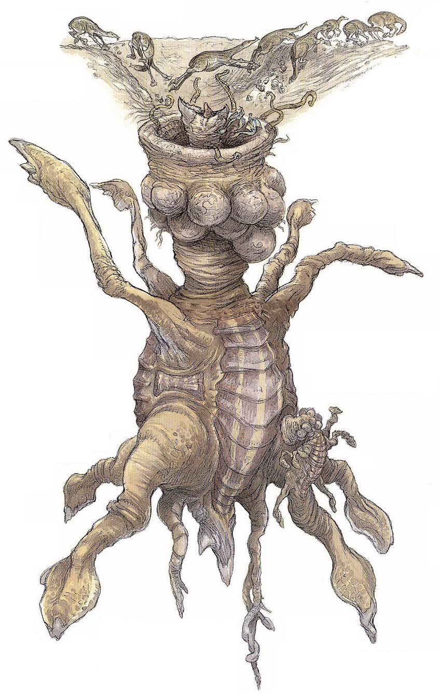
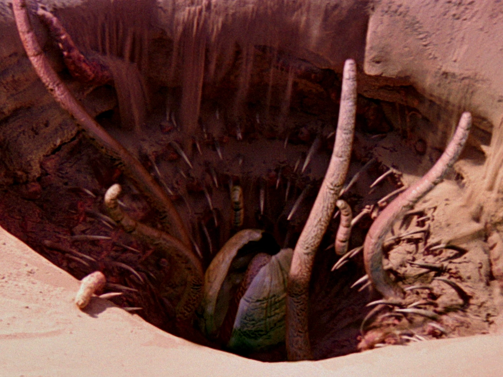

The Sarlacc (genus starwarsius) is a ground-dwelling carnivore found on the desert planet of Tatooine. One of the only observed specimens was "domesticated" by a local warlord as a sacrificial pit. While the only visible part of the Sarlacc is the beak and tentacles, the creature's body reaches far below ground. Fun fact, the Sarlacc takes 20,000 years to digest something as small as a person.
 